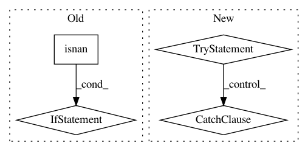

fe3ff1fe75e33ff03f0d07aea09419a2f910cb3a,nilearn/_utils/numpy_conversions.py,,csv_to_array,#Any#Any#,131
Before Change
// First, we try genfromtxt which works in most cases.
array = np.genfromtxt(csv_path, **kwargs)
if array.ndim <= 1 and np.all(np.isnan(array)):
// If the delimiter is not known genfromtxt generates an array full of
// nan. In that case, we try to guess the delimiter
try:
with open(csv_path, "r") as csv_file:
dialect = csv.Sniffer().sniff(csv_file.readline(), delimiters)
except csv.Error as e:
raise TypeError(
"Could not read CSV file [%s]: %s" % (csv_path, e.args[0]))
array = np.genfromtxt(csv_path, delimiter=dialect.delimiter, **kwargs)
return array
After Change
raise TypeError("CSV must be a file path. Got a CSV of type: %s" %
type(csv_path))
try:
// First, we try genfromtxt which works in most cases.
array = np.genfromtxt(csv_path, loose=False, **kwargs)
except ValueError:
// There was an error during the conversion to numpy array, probably
// because the delimiter is wrong.
// In that case, we try to guess the delimiter.
try:
with open(csv_path, "r") as csv_file:
dialect = csv.Sniffer().sniff(csv_file.readline(), delimiters)
except csv.Error as e:
raise TypeError(
"Could not read CSV file [%s]: %s" % (csv_path, e.args[0]))
array = np.genfromtxt(csv_path, delimiter=dialect.delimiter, **kwargs)
return array
In pattern: SUPERPATTERN
Frequency: 3
Non-data size: 4
Instances
Project Name: nilearn/nilearn
Commit Name: fe3ff1fe75e33ff03f0d07aea09419a2f910cb3a
Time: 2016-02-01
Author: abraham.alexandre@gmail.com
File Name: nilearn/_utils/numpy_conversions.py
Class Name:
Method Name: csv_to_array
Project Name: tristandeleu/pytorch-maml-rl
Commit Name: bef7dd92cbdd2c81a7d89786b9a76b011f1bc086
Time: 2018-06-19
Author: tristan.deleu@gmail.com
File Name: maml_rl/baseline.py
Class Name: LinearFeatureBaseline
Method Name: fit
Project Name: matplotlib/matplotlib
Commit Name: d23bcea94a01a598de9619a1bf45b911120f7096
Time: 2019-01-08
Author: jklymak@gmail.com
File Name: lib/matplotlib/axis.py
Class Name: Axis
Method Name: _update_ticks